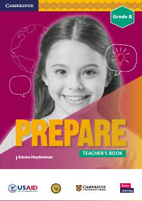

EG8-sinf ingliz tili o'qituvchilari uchun metodik qo'llanma va dars ishlanmalari to'plami.
Ushbu kitob O'zbekiston umumta'lim maktablarining 8-sinf ingliz tili o'qituvchilari uchun mo'ljallangan metodik qo'llanmadir. U Cambridge University Press tomonidan USAID hamkorligida O'zbekiston ta'lim dasturi uchun maxsus moslashtirilgan bo'lib, darslarni samarali tashkil etish bo'yicha tavsiyalar va resurslarni o'z ichiga oladi.